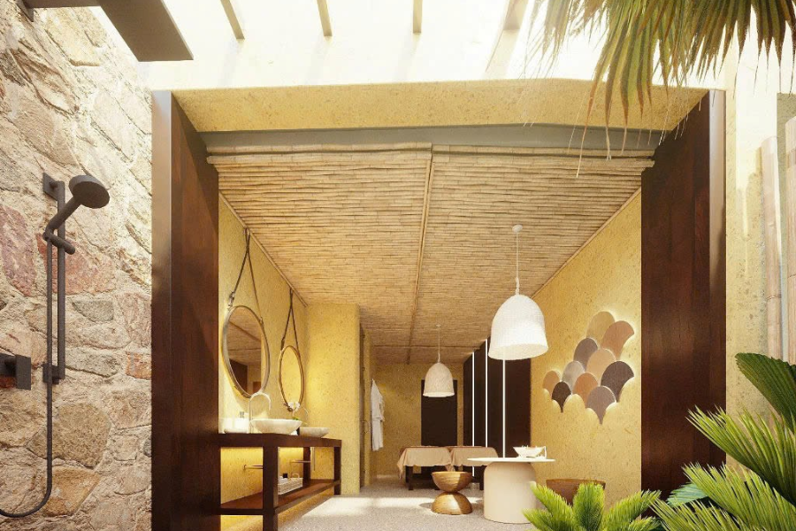
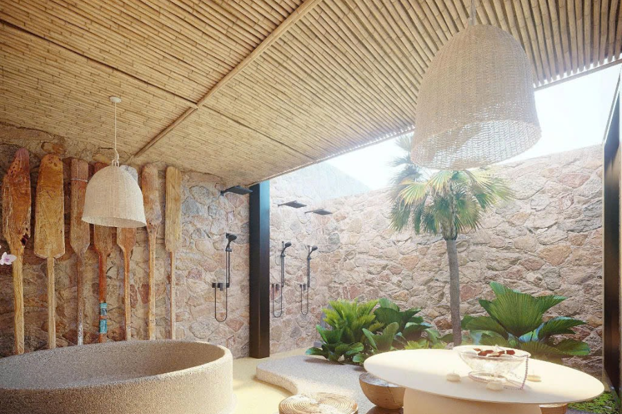
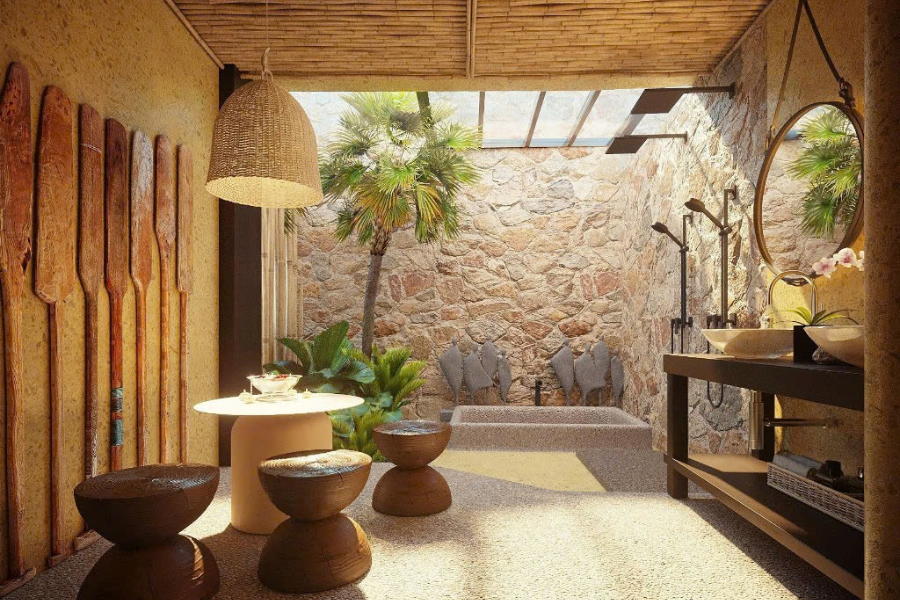
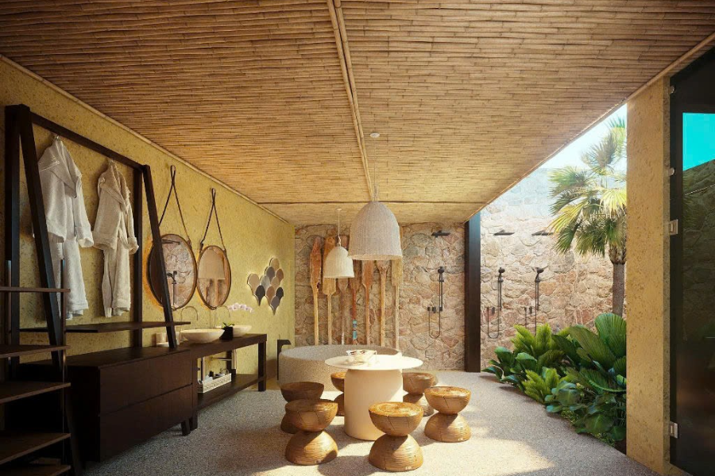
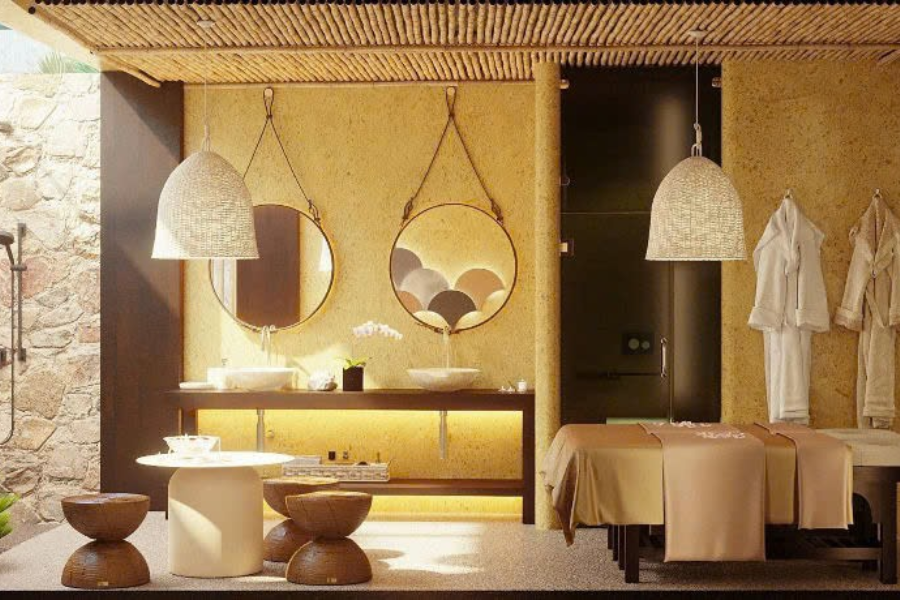

Trong nhịp sống hiện đại đầy tất bật, nhu cầu tìm về với những giá trị mộc mạc, nguyên bản và gần gũi với thiên nhiên đang ngày càng được ưa chuộng hơn bao giờ hết. Và ốp trúc chính là một trong những xu hướng thiết kế kiến trúc nổi bật, đầy ấn tượng. Không chỉ là vật liệu tự nhiên, thân thiện với môi trường, trúc còn thỏa mãn cả yếu tố thẩm mỹ, chất lượng và cảm xúc. Vậy, trong bài viết này, hãy cùng Tre Việt Building khám phá xem ốp trúc là gì? Vì sao phương pháp ốp trúc được ưa chuộng và báo giá thi công như thế nào bạn nhé!
Ốp trúc là gì?
Trúc – Biểu tượng của sự kiên cường, thanh cao, tinh tế và nhã nhặn. Từ lâu, cây đã hiện diện trong đời sống của người Việt như là một phần văn hóa quan trọng không thể thiếu. Thế nhưng, theo dòng chảy của thời gian, trúc không còn nằm yên trong hoài niệm, trong quá khứ, mà đã và đang vươn mình trở thành một vật liệu thi công thời thượng, tạo nên xu hướng thiết kế đậm chất nghệ thuật và đầy tính biểu tượng.
Vậy, ốp trúc là gì? Ốp trúc là phương pháp sử dụng thân cây trúc (sau khi qua xử lý đủ thời gian, đúng kỹ thuật) để ốp lên tường, trần, vách ngăn hay là các mảng trang trí trong không gian nội – ngoại thất. Và không đơn thuần chỉ là lớp phủ bề mặt, ốp trúc còn mang đến nhiều giá trị thẩm mỹ, mang đến chiều sâu văn hóa và cảm hứng sáng tạo cho không gian kiến trúc hiện đại.
Vì sao ốp trúc trở thành sự lựa chọn lý tưởng cho các công trình kiến trúc hiện đại?
Chạm đến vẻ đẹp nguyên bản của thiên nhiên

Không bóng bẩy như là gỗ công nghiệp, cũng không lạnh lùng như là kim loại, sắt, thép, trúc mang đến một vẻ đẹp rất “yên”, rất thật, ấm áp và mềm mại. Mỗi thân trúc chính là một bản thể độc lập: Nó có vết nứt, có mắt đốt, có đường vân riêng biệt. Cũng giống như con người, mỗi một cá thể là một bản sắc, độc đáo và không lặp lại.
Khi được ốp thành từng mảng tường, từng vòm trần, từng chi tiết trang trí, trúc không che giấu đi sự thô sơ, mộc mạc vốn có, mà lại tôn vinh thêm, biến nó trở thành tác phẩm nghệ thuật sống động.
Giao thoa giữa tính thẩm mỹ và tinh thần
Ốp trúc không đơn thuần chỉ là tạo hình, mà còn là cách con người ta tương tác với không gian một cách tĩnh tại, thiền định. Với mỗi công trình, người ta không chỉ thấy mỗi cái đẹp, mà còn cảm nhận được sự bình yên, sự hài hòa giữa vật liệu với ánh sáng, không khí, hay thậm chí là thanh âm khi gió lùa qua các khe hở.
Đó cũng là lý do vì sao trúc trở thành sự lựa chọn tối ưu, lý tưởng hàng đầu cho những không gian cần đến sự thư giãn, như là spa, resort, quán cà phê mang phong cách Đông Dương, homestay giữa núi rừng,…
Tính bền vững, linh hoạt và sự thân thiện với môi trường

- Trúc là loài cây có tốc độ sinh trưởng nhanh và khả năng tái sinh mạnh mẽ. Qua đó giúp góp phần hạn chế tình trạng khai thác quá mức và bảo vệ tài nguyên thiên nhiên, môi trường.
- Trúc nhẹ, dễ thi công, dễ lắp đặt, phù hợp với cả không gian nhỏ lẫn các công trình quy mô lớn.
- Khi được xử lý đủ thời gian, đủ kỹ thuật bởi đơn vị Tre Việt Building, trúc sẽ tăng cường khả năng chống ẩm, chống mối mọt, chịu được thời tiết khắc nghiệt và vững bền màu sắc tự nhiên.
Báo giá thi công ốp trúc tại đơn vị Tre Việt Building 2025

Trên thực tế, chi phí thi công ốp trúc phụ thuộc vào rất nhiều yếu tố. Như là: Loại trúc, kích thước thân trúc, phương pháp xử lý, kỹ thuật thi công và đặc thù thiết kế.
Bạn có thể tham khảo bảng giá thi công ốp trúc mới nhất tại đây:
| Hạng mục | Đơn giá (VNĐ/m²) | Ghi chú |
| Ốp trần trúc sọc nhỏ | 500.000 – 700.000 | Dùng trúc đã xử lý chống ẩm, mối |
| Ốp tường trúc tầm vông 3–4cm | 480.000 – 650.000 | Bao gồm khung xương |
| Vách ngăn trúc nghệ thuật cong | Từ 850.000 trở lên | Tùy độ phức tạp, mẫu thiết kế |
| Ốp trúc phối lưới thép/gỗ/đèn | Tùy chỉnh theo dự án | Yêu cầu bản thiết kế riêng |
Tre Việt Building hỗ trợ quý khách hàng khảo sát, tư vấn miễn phí và gửi bảng báo giá chi tiết sau khi lên phương án triển khai.
Tre Việt Building – Đơn vị tiên phong thi công ốp trúc chuyên nghiệp và sáng tạo

Tre Việt Building tự hào là đơn vị thi công, thiết kế các công trình tre trúc uy tín, chuyên nghiệp, chất lượng hàng đầu Việt Nam. Và sau đây là những lý do mà khách hàng nên tin tưởng lựa chọn đơn vị chúng tôi để hợp tác cùng phát triển:
- Quy trình xử lý trúc khép kín tại xưởng riêng: Vật liệu tre trúc được đội ngũ nhân công lành nghề tại Tre Việt Building tiến hành xử lý kỹ càng, đúng thời gian, đủ công đoạn. Bao gồm hấp sấy, khử dầu, chống mối mọt.
- Đội ngũ kiến trúc sư sáng tạo: Chúng tôi sở hữu đội ngũ kiến trúc sư giàu tư duy nghệ thuật, giàu kiến thức chuyên môn, hứa hẹn mang đến cho bạn những công trình chất lượng nhất.
- Thi công trọn gói: Đơn vị Tre Việt Building hỗ trợ quý khách hàng thi công trọn gói, từ khâu thiết kế 3D cho đến khi hoàn thiện công trình mà không phát sinh bất cứ một khoản chi phí nào.
- Chính sách bảo hành: Chính sách bảo hành rõ ràng cùng dịch vụ hỗ trợ, hậu mãi dài lâu.
Thông tin liên hệ:
CÔNG TY TRÁCH NHIỆM HỮU HẠN TRE VIỆT BUILDING
Địa chỉ: 917 Phạm Văn Đồng, Phường Linh Xuân, Thành phố Hồ Chí Minh
Nhà máy sản xuất: Phú Hợp B, Xã Phú Lâm, Đồng Nai.
Điện thoại – Zalo: 087.6915.999
Email: info@treviet.com.vn
treviet23@gmail.com